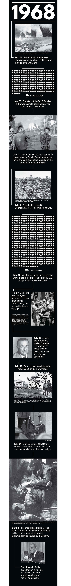

Bob Perkins had barely cleared the chopper’s blades when he was scrambled into action: “We were told to grab equipment and gear from piles – ammo clips, canteens – stuff we figured belonged to guys who’d been killed.”
Perkins, an 18-year-old Marine, had just landed at Khe Sanh, a combat base near the “demilitarized zone” – or DMZ, as the line drawn between North and South Vietnam was called.
It was Jan. 19, 1968, just days before the start of the Tet Offensive and some of the worst fighting of the war. The North Vietnamese army had Khe Sanh in its cross hairs, softening it up with mortar shells before the communists’ first all-out campaign to take the country.
Perkins didn’t make it 36 hours before a bullet made one thing clear: The enemy wasn’t the only danger.
His first day on base was a long one – most of it spent digging foxholes. Intelligence was sketchy, but Khe Sanh was bracing for a major assault. “We knew they were coming,” Perkins said.
Exhausted, he headed for a tent, where he bedded down on the floor: “There weren’t enough cots, and I was the new guy. But it was OK. I remember going to sleep, listening to 'The Lone Ranger' on the Armed Forces radio station and thinking, ‘This isn’t so bad. In a tent, with a bunch of guys.’ It was really pretty cool.”
He was jolted awake by a hail of mortar fire exploding nearby. “I watched a bunch of feet jump over my head,” Perkins said, “and when I thought the last pair had gone by, I sat up. But there was a fellow on a cot behind me. When he jumped up, he had his rifle across his chest.”
It fired. The bullet drove into the back of Perkin’s head – low and to the left – then came out the front, taking much of his lower jaw with it.
“I got up off the ground, turned around and looked at him. Nobody else was around. Neither of us said anything. I think we were both in shock. I wasn’t even sure what had happened.”
SPOTIFY | Sounds of 1968
Any optimism left over from the previous year's "Summer of Love" is cut short by traumatic events abroad. Meanwhile, the music of early 1968 is restless and indecisive. Is it the "time of the season" for loving or for revolution? As you read, listen to some of the songs that shaped 1968.
Instinctively, Perkins grabbed a blanket, wrapped it around his head and staggered out to a foxhole.
“I fell into it, and a corpsman came over and took the blanket off my face. I heard him say ‘Oh my God.’ That’s the last thing I remember.”

BOB PERKINS
Now 65, he left the Marine Corps after he was accidentally shot in the head in Khe Sanh. He spent many of the following years working with Operation Smile, based in Virginia Beach. Behind him, a photo from the '80s shows one of his many reconstructive surgeries. (Stephen M. Katz | The Virginian-Pilot)
He came to on the Repose, a hospital ship that had done duty in Korea. In Vietnam, its staff would treat 9,000 battle casualties, earning the ship its nickname: Angel of the Orient.
Medicine makes big advancements during war. Wounds like Perkins’ provide an extreme form of practice. He was facing a string of surgeries and bone grafts and a 16-month stay at the naval hospital in Portsmouth. He’d have to learn to eat and talk again. Come to grips with the fake beard and moustache provided by the Marine Corps. Ultimately shed them as he accepted the scars. The stares.
He still felt lucky: “I felt that way almost immediately. I’d made it out alive.”
As for the Marine who shot him, Perkins was told he had turned himself in, certain he’d killed somebody.
“I heard they sent him to the naval hospital in Philadelphia,” Perkins said, “to the psych ward.”
VIDEO
President Johnson and Robert McNamara, January 1968
A telephone conversation between President Lyndon B. Johnson and Secretary of Defense Robert McNamara on Jan. 31, 1968. From 0:45 to 4:35, they discuss what to do about the Tet Offensive and Khe Sanh. McNamara warns that Americans will feel the Viet Cong are "much stronger than previously anticipated." He advises the president that the U.S. should "depend upon our ability to inflict very heavy casualties on them."
Tet. A single word that, decades later, would be uttered with an air of reverence by gray-haired warriors.
"I was there during Tet."
Though Tet, as the Vietnamese call their New Year celebration, rolls around annually, no one has to ask, “Which one?”
DID YOU KNOW?
More than 900 service members died their first day in Vietnam; roughly 1,400 died the day they were scheduled to leave.
Americans call it the Vietnam War, but the Vietnamese call it The American War, or the Resistance War Against America.
Tidewater Community College owns the only Vietnam-era swift boat still operating in the U.S. PCF 2 was given to the college in 1995 and renamed the Matthew F. Maury. It's used for oceanographic research and education.
Napalm, an iconic weapon of the war, consisted of a gel-like chemical developed during WWII. Mixed with gasoline and packaged in bombs or flamethrowers, it sticks to the skin, causing terrible burns.
In 1968, North Vietnamese leaders chose the holiday as the time to commence the greatest battle in their country’s history.
The goal: Crack the Sky. Shake the Earth.
Weary of U.S. bombing in the north, tired of the stalemate in the south, the enemy spent months secretly plotting the Tet Offensive – a combination of major conventional assaults and guerilla operations.
It was the largest coordinated campaign either side had attempted so far, with hundreds of thousands of North Vietnamese and Viet Cong striking deep into South Vietnam, attacking military targets and a multitude of towns and cities.
Surprised U.S. and South Vietnamese forces temporarily lost control of a number of places. Assaults came in waves. Khe Sanh, where Perkins was accidentally shot, was under siege for 77 days. The Americans lost more than 500 lives; the North Vietnamese up to 15,000 – most from the carpet bombing done to defend the base.

PETE LARKIN
Now 67, he had a full Navy career then became a teacher at Mount Hermon and Steven H. Clarke elementaries in Portsmouth. In Vietnam, Larkin patrolled the Mekong Delta on swift boats like those shown behind him.
Pete Larkin spent the Tet Offensive in the deep south, where the Viet Cong were using the watery web of the Mekong Delta to move weapons, men and supplies.
Larkin was a 21-year-old riverine, part of the so-called brown-water Navy. His home was a 50-foot, all-aluminum swift boat. PCF (Patrol Craft Fast) No. 5 had no armor but it did have a brace of machine guns, mortar and a six-man crew who would form lifetime bonds. They lived on C-rations, supplemented by whatever bread and fish they could buy from locals. They bunked in a battered cabin permeated by diesel fumes, went to the bathroom over the side and returned to base only to resupply.
“It was pretty intense,” Larkin said. “We’d go out for 24 to 36 hours at a time – search and destroy.”

Pete Larkin patrolled the Mekong Delta in the swift boat PCF 5 in 1968.
“Search” often meant motoring up an ever-narrowing tidal river, announced by the rumble of the boat’s twin engines, waiting to be ambushed by Viet Cong hidden in the thick vegetation that shrouded the banks. The return down the river was even more perilous.
“They’d set up and lie in wait, knowing we had to come back by. Then we’d have to run the gauntlet.”

Pete Larkin grabbed this Viet Cong flag in Rach Gai in 1968.
But getting through wasn’t the only objective. Crews had to circle back repeatedly, weapons blazing, until they finished off their attackers. Pursuit sometimes turned into a footrace. Larkin was grateful if the tangle of undergrowth had been withered by a recent spraying of Agent Orange.
“We’d see the planes going over, and we were grateful because it meant we’d be able to see,” he said. “At the time, nobody realized that stuff was dangerous.”
If they had, it probably wouldn’t have mattered to them. The men on his crew rarely even wore their flak vests. Too hot.
“At that age, you’re excited to be doing something, and you’re feeling pretty much bullet proof,” Larkin said. “That only changes after you’ve seen enough other people getting shot.”

RICK JOHNSON
Now 71, he returned to Hampton Roads and eventually opened Earl's Credit Auto Sales, which he still operates in Portsmouth. Behind him is a photo he took from his Bird Dog of an attack on the Dong Ha airfield, where he was stationed in 1967.
Monsoon season was the worst for Rick Johnson. Heavy rain was about the only thing that grounded the Bird Dogs, a fleet of small, single-engine propeller planes used to find and mark enemy positions for the big guns that would follow.

Rick Johnson flew a Bird Dog between May 1967 and April 1968 for aerial surveillance. He was a forward air controller and an artillery and naval gunfire spotter for the cruiser Newport News, among other ships along the Demilitarized Zone.
“You’re standing down because it’s raining so hard you can’t see anything, but you know you still have troops in combat out there,” Johnson said, “and there’s nothing you can do for them.”
Downtime was killed on the base, where alcohol flowed freely.
“There was a lot of hard liquor,” Johnson said. “We’d play cards, roll ourselves into bed and hope to get back up there tomorrow.”
Johnson was a native of Newport News, a graduate of Virginia Military Institute. He wound up stationed at Dong Ha, South Vietnam’s northernmost city. He was 24 and married just six weeks.
By the time Tet launched, he’d been flying over Vietnam for seven months as an Army reconnaissance pilot. Just him and his backseater, cruising over a checkerboard of farms, thatched-hut villages, tree-covered mountains.

Rick Johnson took this picture of the U.S. special forces camp Lang Veigh just two days before it was attacked.

Rick Johnson was stationed at Dong Ha airfield in 1967.
Most recon flights stuck to an altitude of 1,000 feet, just above the reach of accurate small-arms fire. Lucky shots still riddled his Bird Dog. One shattered its window, leaving him peppered with shrapnel and covered in blood. And then there was a close call with a surface-to-air missile – a silver streak he’d barely gotten off his tail before it exploded.
“We had many a pucker night,” he said.
To mark targets, they had to dip into even more hazardous airspace, dropping to about 800 feet, so Johnson could squeeze off a rocket that ignited into a white phosphorus plume.
“It was pretty close-quarters sometimes,” he said. “You’d have one bomb crater with Marines in it and the NV in another – separated by a few feet. We’d put our rocket in the NV crater so a helicopter gunship could roll in and take them out.”
For him, each flight came with a private scorecard of sorts: “Not body counts, but how many did I save?”
Every liftoff found him reciting the 23rd Psalm. "Yea, though I walk through the valley of the shadow of death, I will fear no evil: for thou art with me ..."
When Tet started, Johnson was near Hue, an ancient, sacred city coveted by the enemy. He and his Bird Dog took to the sky, directing fire at the invaders.

Rick Johnson took this picture of a bullet hole in the windshield of his Bird Dog. The round went through the cockpit, shattering the visor of his flight helmet as he was calling in an artillery strike.
“I’d mark the targets, and they’d come in and strafe,” he said.
The Battle of Hue lasted over a month and destroyed much of the city. The death toll was shocking – 5,000 civilians alone.
“The North Vietnamese soldiers,” Johnson said, “were something else. They were disciplined. A significant foe.”

The first sergeant of the Army's A Company, 101st Airborne Division, guides a medevac helicopter to casualties near Hue, South Vietnam, in 1968. The Battle of Hue that year lasted over a month, destroyed the city and killed 5,000 civilians.

MARSHALL LEFAVOR
Now 74, he spent 26 years in the Marines, then became a military contractor and retired to Virginia Beach. Behind him is a photo he took of an F-4B Phantom II refueling over Chu Lai in 1968. He flew in the same type of aircraft during his tour.
Marshall Lefavor, a Navy brat from Norfolk, discovered the enemy’s dedication at Hill 55. Near Da Nang, the hill was named – in military fashion – for its elevation above sea level.
Lefavor, a graduate of Princess Anne High School, had joined the Marines after college.
“We had about 350 people in my officers’ class at Quantico,” he said, “and we were all sent to Vietnam. Every last one of us.”
The escalating war was bringing a flood of U.S. troops. Lefavor waited for two weeks in Okinawa, Japan, for transport: “Back then, they had a saying: There’s only two kinds of Marines that aren’t in Nam – ones on the way there and ones on the way back.”
He’d trained to be a backseater, a position he’d fill in a variety of aircraft during the last half of his 13-month tour. The first half was spent in the red dirt and plywood hooches of Hill 55, where two Marine commands were headquartered.

Marshall Lefavor prepares to take off on his first mission as a radar intercept officer on an F-4B Phantom II over Da Nang in 1968.
There, Lefavor became a “keeper of the BBs,” the middle-man on the radio linking troops in the field with aerial, naval or artillery firepower.
Most of his shifts were spent in an underground bunker.
“Thirteen issues of Playboy, two Bob Hope shows, 58 malaria pills – that’s how we told time, how long we’d been in country,” he said.
Tet erupted approximately one Playboy issue into his tour. “They wanted Da Nang, and we were in their way. They surprised us. Hill 55 took everything Tet had to offer.”
The enemy’s single-minded ferocity stunned Lefavor. They usually attacked at night, storming headlong through the mine field ringing the camp, throwing themselves at its barbed-wire perimeter.
The defenders leveled their artillery tubes, firing right into the advancing soldiers, who wore short ropes around an ankle, hoping that if they died, a comrade would be able to drag their bodies from the field.
“I couldn’t believe how willing they were to die,” Lefavor said.
He remembers one particularly nasty week, when the action went on “24-7. We used to say that the night belonged to Charlie, but the day belonged to us. By first light, there wasn’t much left out there but chunks. It was downright sacrificial.”
Corpsmen would leave bags of blood plasma outside the perimeter, knowing the enemy had little to no medical supplies.
It wasn’t a humanitarian gesture.
“They’d spike them with rat poison,” Lefavor said. “War is ugly on all sides.”
VIDEO
Walter Cronkite's Vietnam commentary, February 1968
Anchorman Walter Cronkite writes a closing editorial for a special CBS News broadcast Feb. 27, 1968. "To say that we are closer to victory today is to believe in the face of the evidence the optimists who have been wrong in the past," he says.
By the spring of 1968, the Tet Offensive – at least the major phase – had run out of steam. Tet’s lopsided fatalities – roughly 10,000 Americans and South Vietnamese versus 60,000 North Vietnamese and Viet Cong – meant the offensive was a military failure, but it scored a psychological victory from halfway around the world.
Tet shocked the American people. They’d been told by their government that victory was near, that the enemy was so worn down that there was little fight left.
But now, more flag-draped coffins. More haunting footage on the nightly news. More speeches from men at podiums, assuring the public all would be well.
Thousands of miles from the jungle, distrust and disillusionment boiled over.
"War is ugly on all sides."
Joanne Kimberlin, 446-2338, joanne.kimberlin@pilotonline.com
ABOUT THE REPORTING
This story is based on interviews with veterans, archived newspaper articles, information from the Department of Defense, and Virginian-Pilot research.
Part V | "Welcome home, baby killer."
TIMELINE
(Illustration by Adrian Bohannon | The Virginian-Pilot)